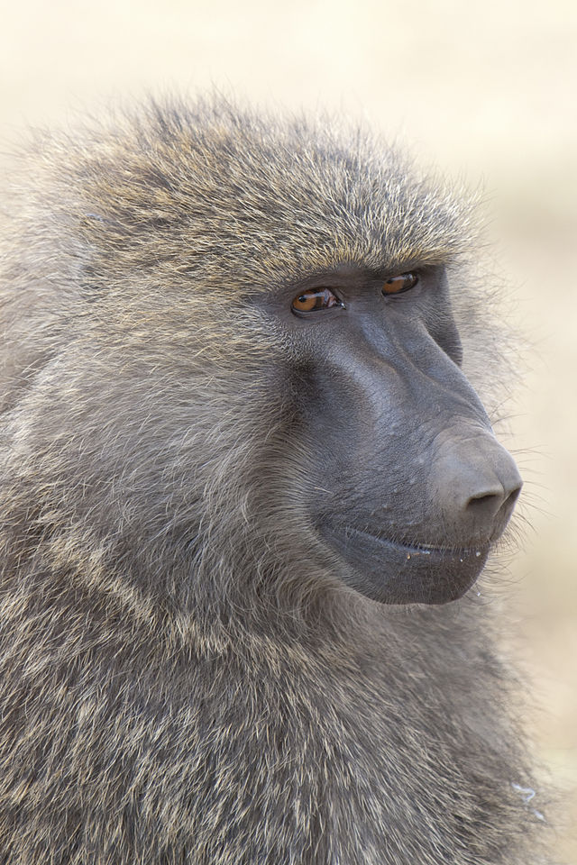

Stefani's Monkey Website
Created by Tydin
Baboons are amongst some of the largest monkeys in the world. They weigh in at about 50 -100 lbs. Baboons have wild-looking fur with a longer mane that extends over the shoulders. Hairless patches on their faces and rumps which are padded with hard skin. Their color varies from olive-green to yellow, silver and brown depending on the species. Baboons generally prefer semiarid habitats, like savannas, but some live in tropical forests. The major requirements for any habitat seem to be water sources and safe sleeping places—either in tall trees or on cliff faces. Baboons live in large groups that can contain up to 300 individuals. They are very adaptable to different habitats. The are five species of baboons and baboons use more than 30 distinct vocalizations. The diet of the baboon generally consists of fruits, vegetables, and meats. They are hunted by local people. Their natural predators include leopards and cheetahs.
Baboon
 Read More